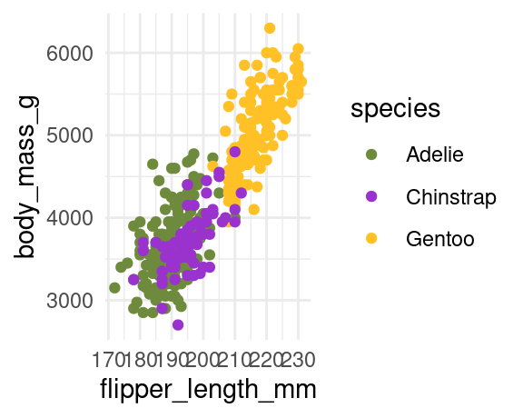
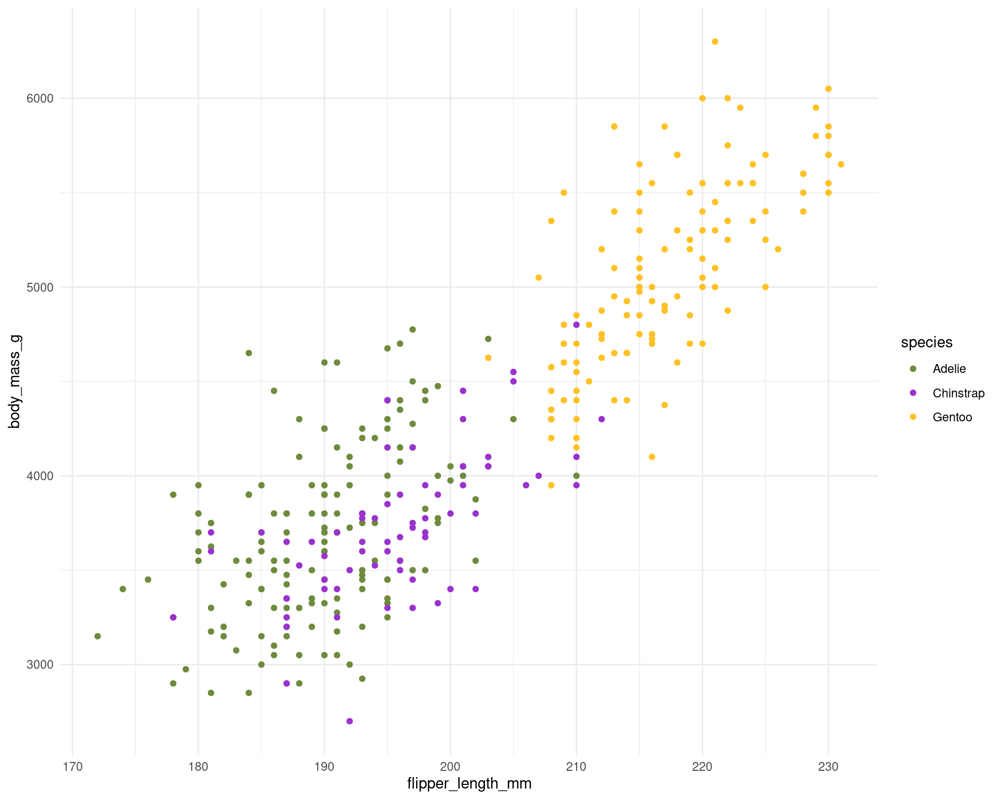
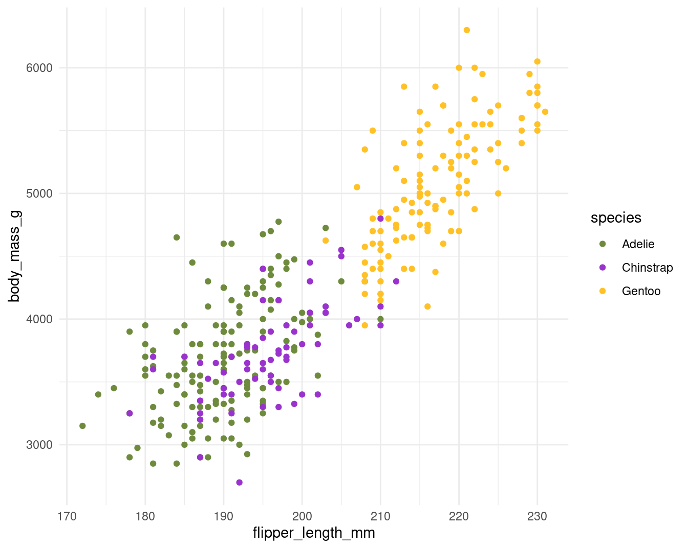
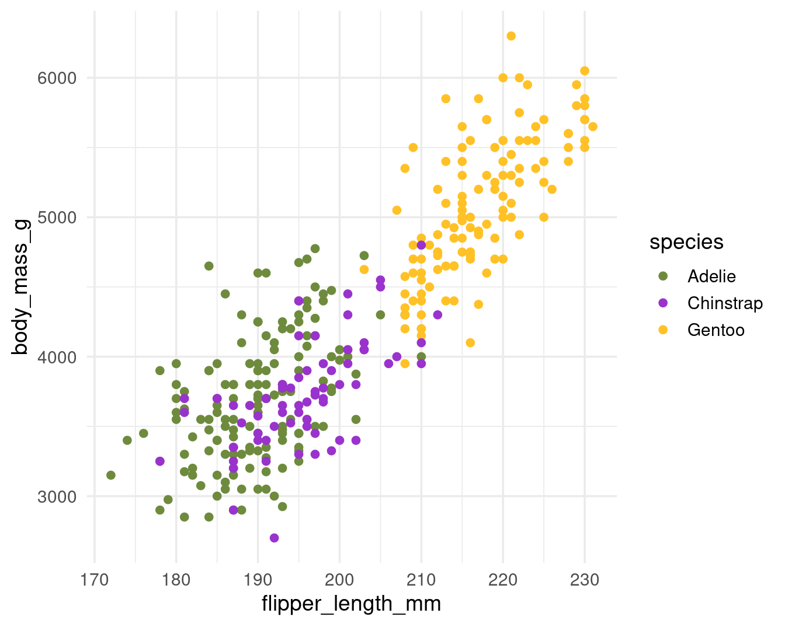

Quarto: 90-120 Minute Introduction

A condensed guide to getting scientists productive with Quarto quickly
7.27 Prerequisites
- Basic familiarity with R or Python
- Experience writing scripts or data analysis code
- No prior experience with Quarto required
- R packages:
ggplot2,palmerpenguins,knitr,dplyr,gt
7.28 Learning Outcomes
By the end of this session, you will be able to:
- Create a Quarto document from scratch
- Render documents to HTML and PDF
- Include figures and tables with proper captions
- Control figure size and placement
- Reference figures and tables dynamically
- Install and use a Quarto extension or journal template
- Troubleshoot common issues
7.29 1. What is Quarto? (10 minutes)
Teaching: 7 minutes | Discussion: 3 minutes
7.29.1 The Problem with Traditional Workflows
Scientists often work with:
- Analysis code in one file (script.R, analysis.py)
- Write-up in another file (paper.docx, report.docx)
- Figures saved separately, manually inserted
- Results copy-pasted between files
Problems:
- When data or analysis changes, everything needs manual updating
- Risk of copy-paste errors
- Hard to reproduce
- Time-consuming to maintain
7.29.2 The Quarto Solution
Quarto lets you combine:
- Code (R, Python, Julia)
- Text (markdown formatting)
- Results (figures, tables, numbers)
All in one file that renders to professional documents.
7.29.3 Two concrete benefits
Quarto's value for scientists rests on two specific mechanisms, not a vague notion of "reproducibility":
Outputs are generated from code, never copied. Every figure, table, and reported number in the document is produced by the code that sits alongside it. There is no manual step where a value is transcribed from the console into the write-up, which removes an entire class of copy-paste error. When the data or analysis changes, re-rendering updates every output at once.
Rendering requires a clean, self-contained run. To render, a Quarto document must contain all the code it depends on and must run from an empty session. This is the practical core of literate programming (Knuth, 1984): a document that renders is, by construction, one that runs start to finish without hidden state left over from interactive work. If your analysis relies on an object you created by hand in the console, the render fails, and that failure is the document telling you it is not yet reproducible.
The second point is worth stressing during the session, because new users frequently break their own documents by working interactively and then cannot render. The clean-session requirement is a feature, not an obstacle.
7.29.4 Quick Example

```{r}
# Analysis
library(ggplot2)
library(palmerpenguins)
data(penguins)
model <- lm(body_mass_g ~ flipper_length_mm, data = penguins, na.action = na.exclude)
# Figure
ggplot(penguins, aes(x = flipper_length_mm, y = body_mass_g)) +
geom_point(alpha = 0.7) +
geom_smooth(method = "lm") +
labs(x = "Flipper Length (mm)", y = "Body Mass (g)")
```
The R-squared between flipper length and body mass is `` `r round(summary(model)$r.squared, 3)` ``.
The line below the chunk uses an inline code expression: backticks containing r followed by an R expression. When the document renders, that expression is evaluated and replaced with the computed value. This is what "outputs generated from code" means in practice: change the model or the data, re-render, and the number in the sentence updates on its own. There is no figure file to re-save and no value to re-type.
7.30 2. Basic Document Structure (15 minutes)
Teaching: 10 minutes | Hands-on: 5 minutes
7.30.1 The Three Parts of a Quarto Document
A .qmd file is structured almost the opposite way round to a .R script. In a .R script, everything is treated as code unless you comment it out with #. In a Quarto document, everything after the YAML is treated as text unless you place it inside a code chunk. Understanding this inversion is the key to reading the rest of the document.
Every Quarto document has three components:
7.30.1.1 1. YAML Metadata (at the top)
The YAML is metadata about the document, written as key: value pairs and fenced by three dashes above and below. It controls the title, author, output format, and global rendering options.
7.30.2 Essential Code Chunk Options
-
#| echo: false- Hide the code, show only results -
#| eval: false- Show the code but don't run it -
#| include: false- Run the code but hide everything -
#| warning: false- Hide warnings -
#| message: false- Hide messages
Setting these once globally in the YAML applies them to every chunk:
You can still override the global setting on any individual chunk. When generating a report for a non-R audience, hiding code, messages, and warnings while showing output is the usual choice.
7.31 3. Essential Workflow (15 minutes)
Teaching: 8 minutes | Setup: 7 minutes
7.31.1 File Organization That Works
my-research-project/
├── my-research-project.Rproj
├── data/
│ ├── raw-data.csv
│ └── processed-data.csv
├── reports/
│ ├── analysis-report.qmd
│ └── presentation.qmd
├── scripts/
│ └── data-processing.R
└── figures/
└── (generated automatically)
7.31.2 Why RStudio Projects Matter
✅ With Projects:
# This works reliably
data <- read_csv("data/raw-data.csv")❌ Without Projects:
# This breaks when you move files or share the project
data <- read_csv("/Users/YourName/Documents/SomeFolder/data/raw-data.csv")7.31.3 The Golden Rule
If you reference a file, use a relative path from your project root.
Good: "data/my-data.csv"
Bad: "C:/Users/Phil/Documents/Research/data/my-data.csv"
7.31.4 A critical wrinkle: the working directory of a .qmd file
There is one trap that catches almost every new user. The working directory for a .qmd file is the folder the .qmd file is saved in, not the project root. This differs from a .R script run inside a project, where the working directory is the project root.
So if your report lives in reports/analysis-report.qmd and you write read_csv("data/raw-data.csv"), Quarto looks for reports/data/raw-data.csv, which does not exist, and the render fails.
You have two reliable options:
- Keep the
.qmdfile in the same folder as the.Rprojfile, so relative paths match between scripts and reports. - Use the
herepackage, which builds paths from the project root regardless of where the.qmdfile sits:
Whichever you choose, be consistent across all .R and .qmd files in the project, or you will hit path errors.
7.32 4. Rendering Outputs (10 minutes)
Teaching: 5 minutes | Practice: 5 minutes
7.32.1 Two Essential Formats
7.32.1.1 HTML (Default - Best for sharing)
Advantages:
- Fast rendering
- Interactive features
- Easy to share via email/web
- Works on any device
7.32.2 Multiple Formats
7.32.2.1 Choosing a theme
HTML output uses a default Bootstrap theme that is perfectly adequate but generic. If you want a different look without writing any CSS, Quarto bundles the full set of Bootswatch themes and you switch between them with a single line in the YAML:
---
title: "My Report"
format:
html:
theme: cosmo
---
A few worth knowing:
cosmo — clean, neutral, a sensible default for reports
flatly — flat design, slightly warmer than cosmo
journal — narrower text column, designed to read like an article
litera — generous typography, good for long-form writing
darkly — dark background, useful for presentations or screen reading
The full list lives at https://bootswatch.com. Setting theme: changes colours, fonts, spacing, and the appearance of code blocks, callouts, and tables all at once, which is usually all the customisation a scientific report needs. If you do want finer control, you can pass two themes together: a base Bootswatch theme plus a small SCSS file containing your overrides. This is genuinely useful for institutional branding but is out of scope for today; the Quarto documentation on HTML theming covers it.
7.33 5. Figures & Tables (25 minutes)
Teaching: 15 minutes | Hands-on: 10 minutes
7.33.1 Creating Figures
```{r}
#| label: fig-scatter
#| fig-cap: "Relationship between bill length and bill depth in Palmer penguins"
#| fig-width: 6
#| fig-height: 4
library(ggplot2)
library(palmerpenguins)
ggplot(penguins, aes(x = bill_length_mm, y = bill_depth_mm, colour = species)) +
geom_point(alpha = 0.7) +
geom_smooth(method = "lm", se = FALSE) +
labs(x = "Bill Length (mm)",
y = "Bill Depth (mm)",
colour = "Species") +
theme_minimal()
```Key options:
-
#| label: fig-name- Required for referencing (must start withfig-) -
#| fig-cap: "Caption text"- Figure caption
7.33.2 Figure sizing in practice
Sizing is the part of Quarto that most often produces unexpected output, because two separate things are being controlled at once. It pays to be explicit about which is which.
fig-width and fig-height set the dimensions of the figure that R produces, in inches. The default is 7 inches wide. These dimensions determine how much room ggplot2 has to lay out its elements: axes, legends, titles, points. The base font size in your theme stays fixed regardless of these dimensions, so a wide figure makes text look proportionally smaller and a narrow figure makes text look proportionally larger.
out-width sets the size of the figure as it appears in the final rendered document, expressed as a percentage of the available page or column width. This is a pure scaling operation: it does not change the figure that R produced, it just stretches or shrinks the image on the page.
You almost always want to set both. fig-width controls how the figure is drawn; out-width controls how it is displayed.
7.33.2.1 A common control: fig-asp
Rather than setting width and height separately, set fig-width and use fig-asp for the height-to-width ratio. A value of 0.618 (the golden ratio) or 0.8 produces well-proportioned figures without needing to think in absolute heights.
7.33.2.2 Worked example
The base plot for this section:
penguin_colours <- c("darkolivegreen4", "darkorchid3", "goldenrod1")
plot <- penguins |>
ggplot(aes(x = flipper_length_mm,
y = body_mass_g)) +
geom_point(aes(colour = species)) +
scale_colour_manual(values = penguin_colours) +
theme_minimal(base_size = 11)Too narrow: elements crowd the plot area.

Too wide: text looks small relative to the plot area.

A reasonable default.

If the text still looks too small at the size you want, raise the theme's base size rather than shrinking the figure:

7.33.2.3 Controlling the rendered display with out-width
Everything above changes how the figure is drawn. To change how big it appears on the page, use out-width. Percentages are easiest:

The figure was drawn at 7 inches wide, but takes up only half the column on the page. The internal proportions of text and elements are unchanged: it is the same image, scaled down.
7.33.2.4 Rules of thumb
- Set
fig-width: 7andfig-asp: 0.8as defaults - For figures with long axis labels or many legend entries, increase
fig-widthto 8 or 9 - Use
out-widthto fit the rendered figure to the page, not to fix proportions - If text looks wrong, adjust
base_sizein your theme rather than the figure dimensions
7.33.3 Creating Tables
```{r}
#| label: tbl-summary
#| tbl-cap: "Summary statistics for penguin body mass by species"
library(knitr)
library(dplyr)
summary_stats <- penguins |>
summarise(
mean_mass = round(mean(body_mass_g, na.rm = TRUE), 0),
sd_mass = round(sd(body_mass_g, na.rm = TRUE), 0),
n = sum(!is.na(body_mass_g)),
.by = species
)
kable(summary_stats)
```Note the use of .by = species for per-operation grouping rather than the older group_by() then ungroup() pattern.
7.33.4 Better Tables with gt
```{r}
#| label: tbl-gt-example
#| tbl-cap: "Professional table formatting"
library(gt)
penguins |>
head(5) |>
select(species, bill_length_mm, bill_depth_mm, body_mass_g) |>
gt() |>
fmt_number(columns = c(bill_length_mm, bill_depth_mm), decimals = 1) |>
fmt_number(columns = body_mass_g, decimals = 0) |>
cols_label(
species = "Species",
bill_length_mm = "Bill Length (mm)",
bill_depth_mm = "Bill Depth (mm)",
body_mass_g = "Body Mass (g)"
)
```7.34 6. Cross-References (15 minutes)
Teaching: 10 minutes | Practice: 5 minutes
7.34.1 Why Cross-References Matter
Instead of: "See the figure below" or "Table 1 shows..."
Use: "(fig-scatter?) shows a clear relationship" → "Figure 1 shows a clear relationship"
Benefits:
- Numbers update automatically
- Links are clickable in HTML
- No broken references when you add or remove items
A cross-reference has two halves: a chunk label with the correct prefix (fig- or tbl-), and an @-reference to that label in your text. Both must be present for the reference to resolve.
7.34.2 Referencing Figures
```{r}
#| label: fig-correlation
#| fig-cap: "Strong positive correlation between flipper length and body mass"
ggplot(penguins, aes(x = flipper_length_mm, y = body_mass_g)) +
geom_point(alpha = 0.7) +
theme_minimal()
```
As shown in @fig-correlation, penguins with longer flippers tend to have greater body mass.7.34.3 Referencing Tables
```{r}
#| label: tbl-descriptive
#| tbl-cap: "Descriptive statistics for penguin measurements"
penguins |>
summarise(
across(
c(bill_length_mm, bill_depth_mm, flipper_length_mm, body_mass_g),
list(mean = \(x) mean(x, na.rm = TRUE), sd = \(x) sd(x, na.rm = TRUE))
)
) |>
knitr::kable(digits = 1)
```
The summary statistics (@tbl-descriptive) reveal important patterns in penguin morphology.7.35 7. Extensions and Templates (8 minutes)
Demonstration — instructor-led with files open
7.35.1 Why extensions exist
Default Quarto covers the common formats, but you will eventually want something the base install does not provide: a journal's required layout, a custom callout style, or an output format a publisher mandates. Rather than editing Quarto's internals, the community packages these additions as extensions. An extension is a self-contained folder of templates, styles, and filters that you install into your project and then reference from the YAML.
Extensions install locally into a _extensions/ folder beside your .qmd file, so they travel with the project and do not depend on anything installed system-wide. This keeps your work reproducible: a colleague who clones your project gets the extension too.
7.35.2 Installing an extension
Extensions are installed from the terminal (not the R console) with quarto add, giving it the GitHub repository that hosts the extension:
Quarto will ask for confirmation, then create a _extensions/ folder in your project. You only do this once per project. To use the installed format, point the YAML at it:
7.35.3 Journal templates
The most useful extensions for scientists are journal article templates, maintained under the quarto-journals organisation on GitHub (https://github.com/quarto-journals). These reproduce the formatting required by specific publishers, so you can write in Quarto and render directly to a submission-ready PDF.
Rather than installing one piecemeal, you can start a new project pre-populated with a template:
This creates a working skeleton document you can edit, which is often the fastest way to see how an extension expects to be used. The skeleton includes a sample .qmd with the YAML already configured and placeholder content showing where the title, abstract, authors, and body go.
7.35.5 A note on scope
You will not write your own extension today, and most scientists never need to. The practical skill is recognising that if a format or style you need already exists, you can install it in one command rather than fighting the defaults. Browse the full listing at https://quarto.org/docs/extensions/ when a specific need arises.
Take-home: find the template for a journal in your field, install it, and render the example document.
7.36 8. Quick Troubleshooting (7 minutes)
Teaching: 7 minutes
7.36.1 Top issues for scientists
7.36.1.1 1. "File not found" Errors
Problem:
data <- read_csv("mydata.csv") # Error: cannot open fileSolution: Use RStudio Projects with relative paths, and remember the .qmd working-directory rule from section 3. If the report is in a sub-folder, use here():
7.36.1.2 2. Code Chunks Won't Run
Problem: Chunk shows but doesn't execute
Check:
- Is the chunk language correct?
{r}not{R} - Missing package? Add
library(package) - Is
#| eval: falseset when it should betrue?
7.36.1.3 3. Rendering Fails Because of Interactive State
This is the most common failure and follows directly from the clean-session requirement in section 1. If you created an object in the console by hand and your document depends on it, the render fails because that object does not exist in the fresh session Quarto uses.
Common fixes:
- Restart and test: Session → Restart R, then render. If it fails, the document is missing code it needs.
- Check chunk order: code must appear before it is used; a fresh session has no memory of later chunks.
- Start simple: comment out chunks until you find the one that breaks.
- Read the console: the error usually names the offending line.
7.36.2 Getting Help
- Error messages: read them carefully; they usually point to the line
- Quarto documentation: https://quarto.org/docs/
- Community: Stack Overflow, Posit Community
-
Debug mode: set
#| error: trueto render despite an error and see it in the output
7.37 9. Hands-on Exercise: Complete Scientific Report (15 minutes)
Goal: Create a mini scientific report with all elements
7.37.1 Your Task
Create a document called scientific-report.qmd that includes:
- Professional YAML header (title, author, date, HTML format, global execute options)
- Introduction section with background text
- Methods section describing your analysis
-
Results section with:
- A figure showing the relationship between two variables, with sensible
fig-width,fig-asp, andout-width - A summary table with descriptive statistics
- Proper captions and cross-references to both
- A figure showing the relationship between two variables, with sensible
- Conclusion section referencing your figure and table
- Bonus: install a journal template extension and render the report with it
7.37.2 Suggested Data
Use the Palmer penguins dataset or your own data:
# Load data and packages
library(palmerpenguins)
library(ggplot2)
library(dplyr)
data(penguins)
# Create figure
ggplot(penguins, aes(x = flipper_length_mm, y = body_mass_g, colour = species)) +
geom_point(alpha = 0.7) +
geom_smooth(method = "lm") +
theme_minimal()
# Create table
penguins |>
summarise(
across(
c(bill_length_mm, body_mass_g),
list(mean = \(x) mean(x, na.rm = TRUE), sd = \(x) sd(x, na.rm = TRUE))
),
.by = species
)7.38 Next Steps & Resources
You now have the essential skills to create reproducible scientific documents with Quarto.
7.38.1 To Continue Learning
- Explore more formats: presentations, websites, books
- Advanced features: citations, bibliographies, equations
- Extensions: https://quarto.org/docs/extensions/
- Templates: create reusable document templates
7.38.2 Useful Resources
- Quarto Documentation: https://quarto.org/docs/
- R for Data Science Quarto chapter: https://r4ds.hadley.nz/quarto
- Quarto Community: https://github.com/quarto-dev/quarto-cli/discussions